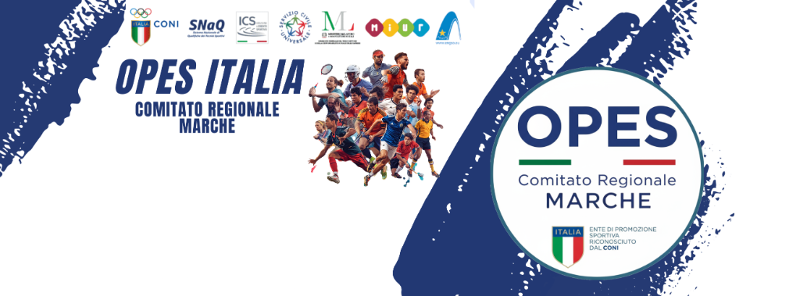

OPES – Organizzazione Per l'Educazione allo Sport è un Ente di Promozione Sportiva riconosciuto dal CONI (Comitato Olimpico Nazionale Italiano) che opera in tutta Italia attraverso i Comitati Regionali e Provinciali.
Il Comitato Regionale Marche nasce con l'obiettivo di promuovere la cultura sportiva nelle cinque province marchigiane – Ancona, Pesaro-Urbino, Macerata, Ascoli Piceno e Fermo – garantendo l'accesso allo sport a tutti i cittadini, indipendentemente dall'età, dal background sociale o dalle capacità fisiche.
OPES Marche supporta oltre 350 società sportive affiliate con servizi di tesseramento, formazione, organizzazione di campionati regionali e supporto amministrativo-legale. La nostra rete comprende più di 15.000 atleti tesserati nelle Marche in oltre 30 discipline sportive diverse.
OPES Marche opera sulla base di principi fondamentali che guidano ogni attività e ogni scelta organizzativa.
Lo sport è per tutti. Promuoviamo l'accesso alle attività sportive senza discriminazioni di età, genere, nazionalità o capacità fisiche.
Crediamo nel potere dello sport come strumento di coesione sociale e sviluppo comunitario nelle Marche.
Puntiamo alla qualità in ogni attività, dalla formazione tecnica all'organizzazione degli eventi sportivi.
Promuoviamo uno sport rispettoso dell'ambiente e orientato allo sviluppo sostenibile del territorio.
Investiamo nella formazione continua di tecnici, dirigenti e atleti per elevare la qualità dello sport regionale.
Il rispetto delle regole, l'antidoping e il fair play sono valori fondanti di ogni attività OPES.
OPES – Organizzazione Per l'Educazione allo Sport viene fondata con l'obiettivo di promuovere la pratica sportiva su tutto il territorio nazionale come strumento di crescita personale e sociale.
OPES ottiene il riconoscimento ufficiale dal CONI come Ente di Promozione Sportiva, consolidando il proprio ruolo nel panorama sportivo italiano e aprendo la strada a nuove affiliazioni.
Viene costituito il Comitato Regionale OPES Marche, con sede ad Ancona. Le prime affiliazioni comprendono circa 50 società sportive distribuite nelle province marchigiane.
Il Comitato Regionale Marche supera le 100 società affiliate e lancia i primi campionati regionali multidisciplinari, con oltre 3.000 atleti tesserati.
OPES Marche avvia programmi dedicati allo sport inclusivo, all'integrazione sociale attraverso lo sport e alle attività sportive nelle scuole della regione.
Nonostante le difficoltà legate alla pandemia, OPES Marche mantiene la propria attività grazie alla digitalizzazione dei servizi e all'innovazione nell'organizzazione sportiva.
Oggi OPES Marche è uno dei comitati regionali più attivi d'Italia con oltre 350 società affiliate, 15.000 tesserati e più di 30 discipline sportive rappresentate su tutto il territorio regionale.
Il Comitato Regionale Marche è guidato da un consiglio eletto dalle società affiliate.
Presidente Regionale
Comitato Reg. Marche
Guida e rappresenta il Comitato Regionale in tutte le sedi istituzionali.
329 962 7016Vice Presidente Regionale
Vicepresidenza
Supporta il Presidente e coordina le attività sportive e amministrative.
340 211 4795Consigliere
Terzo Settore
Supporta il presidente ed il vice presidente nelle attività organizzative, eventi no profit, eventi sportivi e del terzo settore.
Responsabile Tecnico
Settore Tecnico
Coordina i campionati, le gare e tutte le attività tecniche.
331 287 5923Responsabile Formazione
Settore Formazione
Gestisce i corsi di formazione per tecnici e dirigenti sportivi. Preparatore Fisico CONI, esperto atletica e preparazione psicofisica giovanile.
Resp. Comunicazione & Tesseramento
Segreteria & Tesseramento
Gestisce la comunicazione istituzionale, i rapporti con i media e il tesseramento degli atleti.
340 211 4793Consulta lo Statuto del Comitato Regionale Marche, il Regolamento Interno e i documenti ufficiali OPES. Tutti i documenti sono disponibili per le società affiliate e gli organi istituzionali.